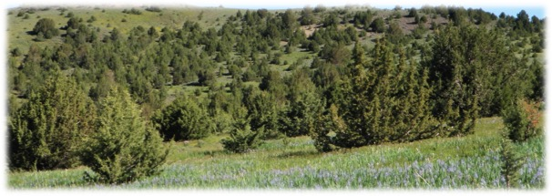
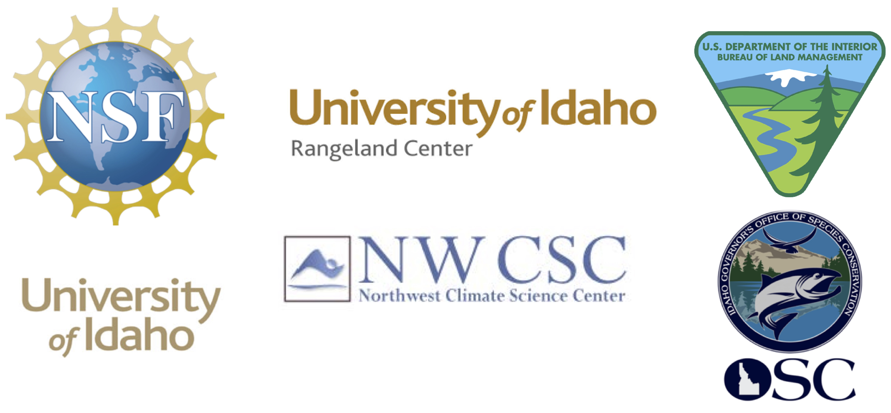
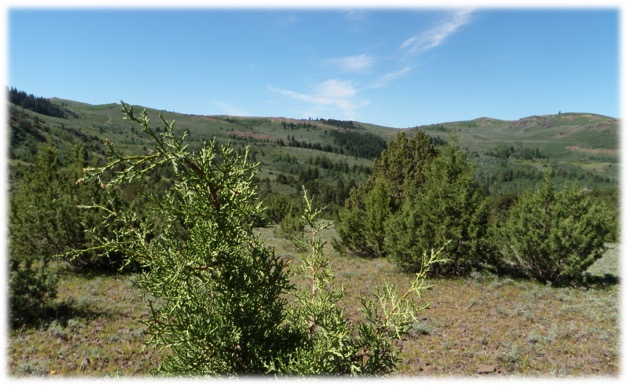

Welcome to the Juniper Hydrology website!

Hello, my name is Ryan Niemeyer. The goal of this website is to communicate the knowledge gained about juniper hydrology during my PhD in an easily accessible format. My PhD research at University of Idaho was completed in December 2015. If you would like to read through my dissertation, it is accessable here and a video of my defense is here. However, to access specific juniper hydrology topics more quickly, this website is much more useful. An overview of topics is below and you can navigate between topics on any page from the window to the left. I hope this information will be a helpful resource for stakeholders, policy makers, and other scientsts. Please contact me if you have any juniper hydrology questions or feedback on the website here. Enjoy!
Justification
Western juniper have increased 10-fold in much of the Western U.S. and could potentially continue to encroach into sagebrush steppe communities. This is also true of other pinyon and juniper species across the Western U.S. Although the western juniper encroachment process is well documented, there is a lack of research on its hydrologic impacts of western juniper encroachment. The links below are to research topics aimed at filling this and related knowledge gaps.
Content
1. Interception and Snow Processes
2. Shallow and Deep Moisture
3. Streamflow
4. Juniper and Climate Change
5. Juniper Hydrology Conceptual Model
6. Publications
7. About
Support
This research was funded by a National Science Foundation IGERT fellowship, USGS Northwest Climate Science Center fellowship, grants from the Idaho Governor's Office of Species Conservation, Bureau of Land Management, and University of Idaho Rangeland Center, and institutional support from the University of Idaho. These groups were generous in their support, but their support in no way signifies their endorsement of the research or conclusions on this website.

